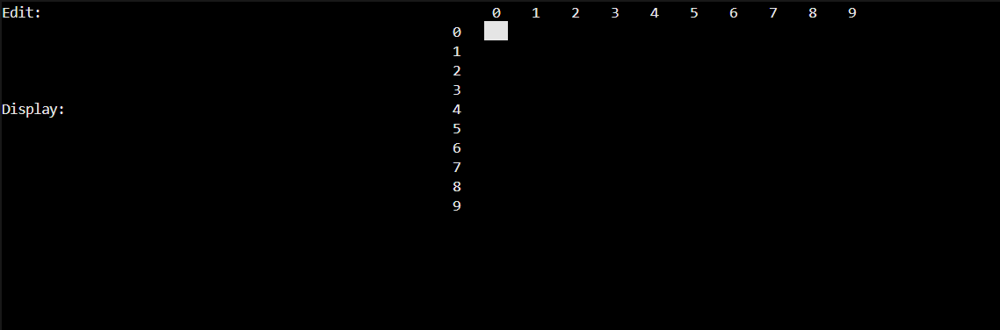
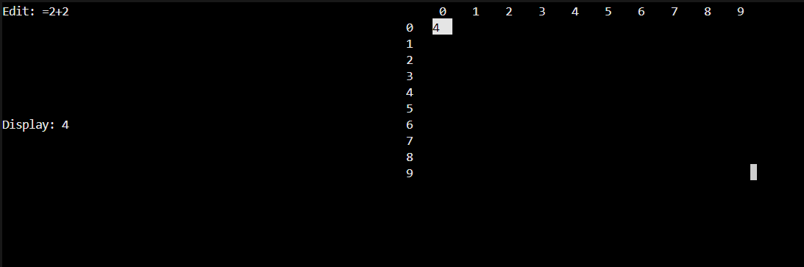

About the Project
This is an ongoing project with a partner to create a spreadsheet with excel like features. This project has created unique challenges with working with a partner and learning an unfamiliar language in a short period of time. Within the spreadsheet a user can edit cells and it will appear in the Edit window. Once finished it will appear in the Display window and updates in real time with changes to formulas or other modifications. A main part of my role was to create the EBNF and then translate it and write a parser to create a tree from any given input.
Features
- Interactive user interface
- Real time update with edits
- Able to handle complicated formulas
Gallery

Here is the inital screen for when the program opens

Here is an example of a formula with the correct answer displayed